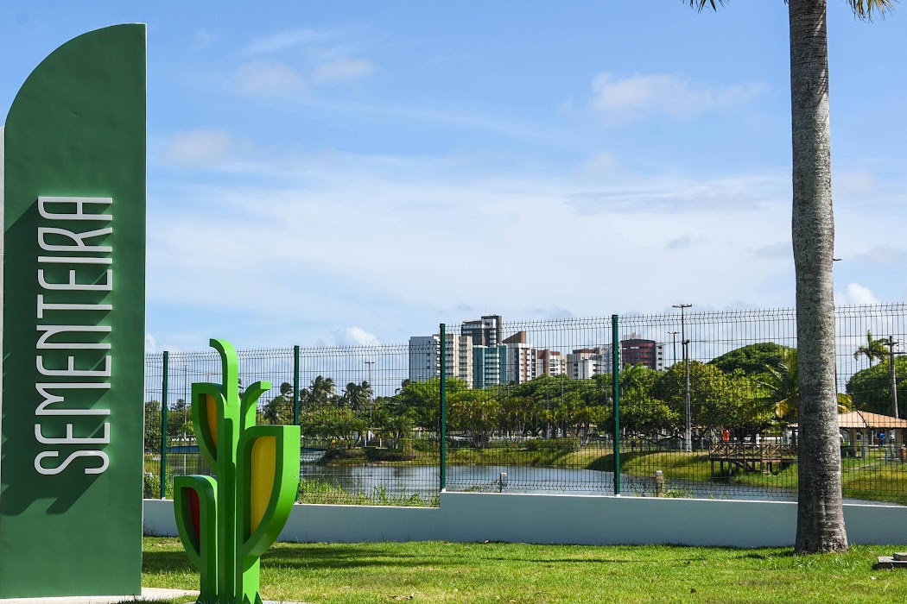

Sementeira

O parque spode ser utilizado pelos aracajuanos e turistas para prática de atividades esportivas e de
lazer , pesquisas ambientais
além de outras atividades em contato coma natureza. o espaço conta com
parque infantil, campo de futebol
quadra poliesportiva, espaço com aparelhos para exercícios físicos, pista
para caminhada, quiosque para piquiniques, sanitários, lagos, e iluminação adequada.
Atrativos do Parque da Sementeira
- Parque infantil
- Campo de futebol
- quadra poliesportiva
- Aparelhos para exercícios físicos
- Pista para caminhada
- Quiosques para piqueniques
- Sanitários
- Lagos e áreas verdes
- Iluminação adequada para visitas noturnas